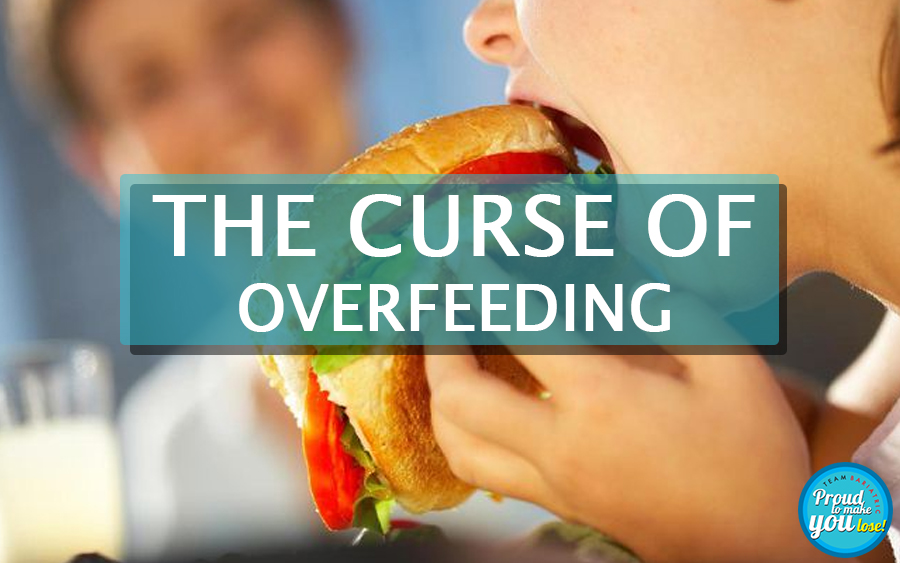

The Dangers of Overfeeding: Mohammed’s Journey Through Bariatric Surgery
Mohammed’s Early Years
Mohammed is an 18 year boy from Afghanistan, he is shy, simple, has an easy smile, and is full of life. As a toddler he grew up active and playful, he was 15 kgs when he was 4. Then he steadily started gaining weight. Slowly but relentlessly, he over-grew. At 15 years he was 115 kgs at 5 feet 6. Very very obese indeed. When he came to us 3 years later, he could barely walk, sleep only sitting, sweat all day, and couldn't speak without losing breath. He had become a giant, he weighed a huge 185 kgs at a BMI of 71.
Understanding the Cause of Obesity: Overfeeding
His tests for genetic or hormonal problem came out normal. We looked into his life history, didn't have much clue about he being so obese. On further questioning we found that Mohammed was born after eight sisters but he was born normal, a precious male child. Hence he was fed too much with food, love and affection by his doting mother and sisters. We have this gender issue in this part of the world, a male child is the preferred one, he is the natural heir, is supposed to look after parents in old age, and fetch dowry. Hence he was pampered. Initially, he must have resisted but later on, yielded to pressure and temptations of calorie rich sumptuous food. As it happens, his sense of satiety slowly got blunted and he could eat all day without feeling full, a condition known as hyperphagia. He was suffering from what I call the curse of overfeeding.
The Bariatric Surgery Experience
Mohammed underwent a difficult Bariatric surgery, he was kept on ventilator support for the next three days, before he could breath on his own. he made a slow recovery. Our psychologists and nutritionists mean while gave counselling sessions to Mohammed and his mother regarding his feeding and after-care.
Two weeks later they returned home.
A New Beginning
Mohammed did well, 2 months later he had lost 21 kgs , now he could walk without help, and sleep undisturbed.
Five months later he had joined back his elementary school which he had left years ago owing to his crippling obesity. He was well on his way to return to a normal life. Then we lost contact with them.we hope and pray the parents haven’t gone back to their old ways.
The Impact of Misplaced Love
This story of Bariatric surgery is unique, so many times our misplaced love can ruin our children's life. Our myths and false beliefs, force us to overfeed them. An over weight child is likely to become obese adult, will suffer from premature ageing diabetes hypertension, heart diseases and more.
Guidelines for Preventing Overfeeding
Now how much is good enough for our children, is a contentious issue, but here are some simple rules of thumb. If we follow them we are going do well.
Avoid Overfeeding
There is a natural tendency to overfeed children. We are always worried if we are feeding them enough, so if in doubt stop.
Respect Toddler’s Satiety Signals
Toddlers by and large have a well developed sense of feeling full, and stop as soon as they lose interest in their meal.
Feed on Demand
Feed on demand is the ideal way, like all ideals difficult to follow. But worth pursuing.
Be Mindful of Pre-School Children’s Diet
Pre-school children are at risk of obesity more than ever before. they get bored easily. Do not feed to appease, reward, or pacify your children with snacks. it creates an unhealthy craving for snacks.
Limit Sweets and Chocolates
Give them sweets and chocolate strictly only “once a week”.
Portion Control: Avoid Overfeeding
Don't push the food around on their plates and don't force them to finish what you give them. Don't overfill their plates and ask them to finish every time, instead serve a smaller portion and refill.
What you can hold in your palm is a good enough portion to star with.
Monitor Weight Gain
If your child is gaining weight steadily, her clothes are getting short instead of tight at the waste, bravo !! You have done well.
Back to Blog